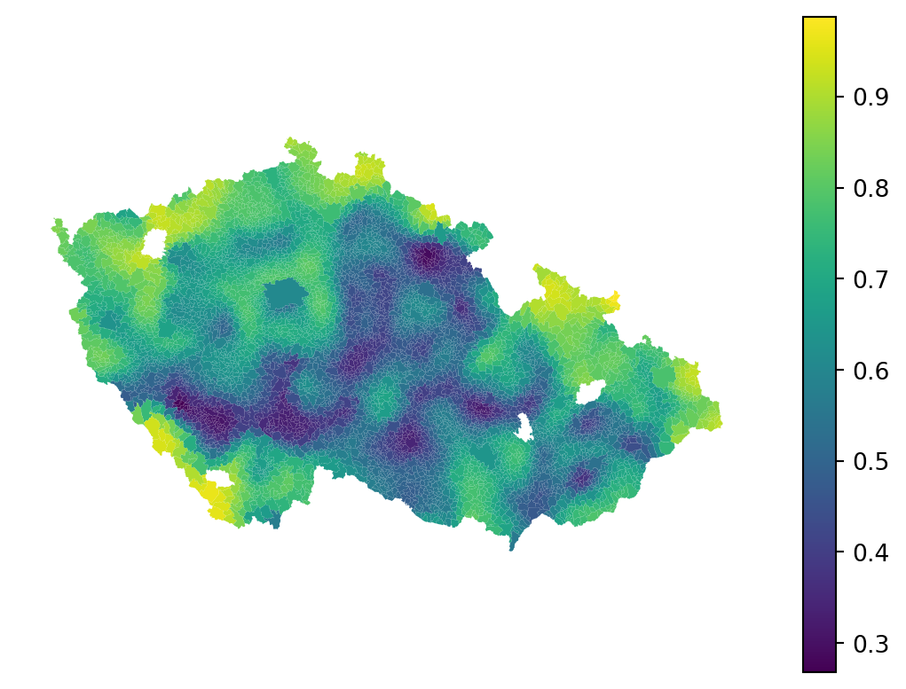
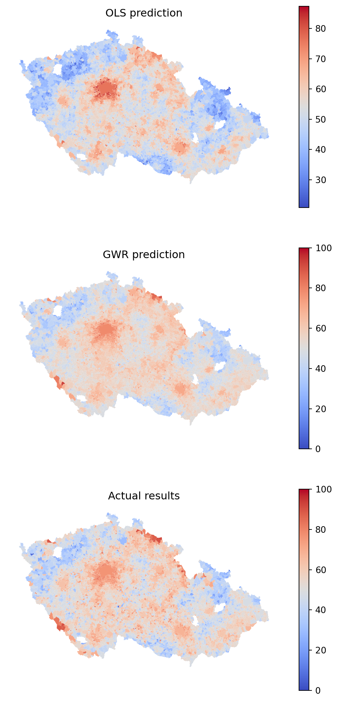
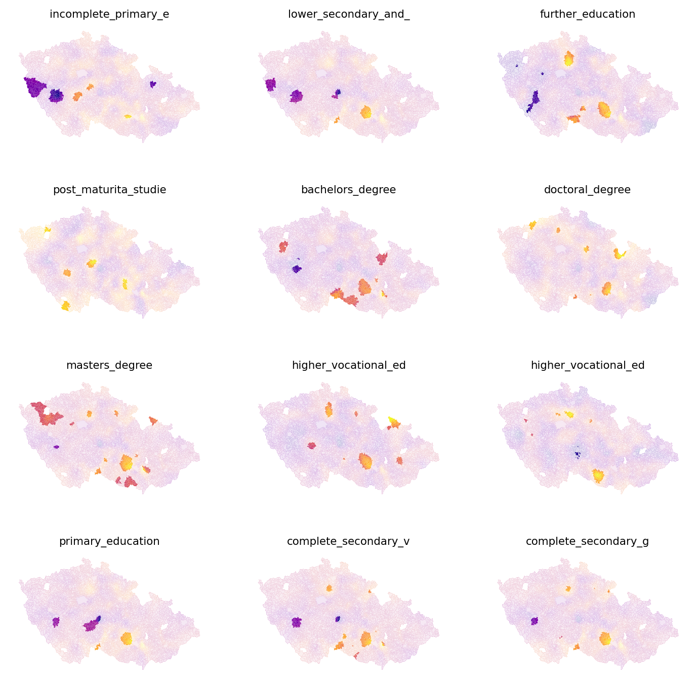

import geopandas as gpd
import pandas as pd
import numpy as np
import mgwr
import seaborn as sns
import matplotlib.pyplot as plt
from libpysal import graph
import statsmodels.formula.api as sm
import esda
from splot.esda import lisa_clusterRegression and geography
The contents is not complete
This section is in works and is not yet complete.
When trying to determine the effect of some (independent) variables on the outcome of phenomena (dependent variable), you often use regression to model such an outcome and understand the influence each of the variables has in the model. With spatial regression, it is the same. You just need to use the spatial dimension in a mindful way.
This chapter provides an introduction to ways of incorporating space into regression models, from spatial variables in standard linear regression to geographically weighted regression.
Data
You will work with the same data you already used in the chapter on spatial autocorrelation - the results of the second round of the presidential elections in Czechia in 2023, between Petr Pavel and Andrej Babiš, on a level of municipalities. You can read the election data directly from the chapter 5 location.
elections = gpd.read_file(
"https://martinfleischmann.net/sds/chapter_05/data/cz_elections_2023.gpkg"
)
elections = elections.set_index("name")
elections.head()| PetrPavel | AndrejBabis | nationalCode | sourceOfName | geometry | |
|---|---|---|---|---|---|
| name | |||||
| Abertamy | 62.98 | 37.01 | 554979 | Český úřad zeměměřický a katastrální | MULTIPOLYGON (((-849678.970 -996811.240, -8494... |
| Adamov (Blansko, 581291) | 57.17 | 42.82 | 581291 | Český úřad zeměměřický a katastrální | MULTIPOLYGON (((-590872.420 -1148832.360, -591... |
| Adamov (České Budějovice, 535826) | 65.17 | 34.82 | 535826 | Český úřad zeměměřický a katastrální | MULTIPOLYGON (((-748969.500 -1162820.890, -749... |
| Adamov (Kutná Hora, 531367) | 53.84 | 46.15 | 531367 | Český úřad zeměměřický a katastrální | MULTIPOLYGON (((-677775.470 -1077800.050, -677... |
| Adršpach | 62.18 | 37.81 | 547786 | Český úřad zeměměřický a katastrální | MULTIPOLYGON (((-620084.550 -999987.800, -6201... |
Alternative
Instead of reading the file directly off the web, it is possible to download it manually, store it on your computer, and read it locally. To do that, you can follow these steps:
- Download the file by right-clicking on this link and saving the file
- Place the file in the same folder as the notebook where you intend to read it
- Replace the code in the cell above with:
elections = gpd.read_file(
"cz_elections_2023.gpkg",
)The election results give you the dependent variable - you will look at the percentage of votes Petr Pavel, the winner, received. From the map of the results and the analysis you did when exploring spatial autocorrelation you already know that there are some significant spatial patterns. Let’s look whether these patterns correspond to the composition of education levels within each municipality.
You can use the data from the Czech Statistical Office reflecting the situation during the Census 2021. The original table has been preprocessed and is available as a CSV.
education = pd.read_csv(
"https://martinfleischmann.net/sds/chapter_10/data/education.csv"
)
education.head()| uzemi_kod | without_education | undetermined | incomplete_primary_education | lower_secondary_and_secondary_education | further_education | post_maturita_studies | bachelors_degree | doctoral_degree | masters_degree | higher_vocational_education | higher_vocational_education_in_a_conservatory | primary_education | complete_secondary_vocational_education | complete_secondary_general_education | okres | |
|---|---|---|---|---|---|---|---|---|---|---|---|---|---|---|---|---|
| 0 | 500011 | 0.570704 | 3.741281 | 1.141408 | 34.242232 | 1.775523 | 0.507292 | 2.853519 | 0.634115 | 12.935954 | 1.395054 | 0.126823 | 11.350666 | 17.945466 | 10.779962 | Zlín |
| 1 | 500020 | 0.885827 | 3.346457 | 1.968504 | 40.157480 | 2.066929 | 0.885827 | 1.771654 | 0.492126 | 6.299213 | 1.574803 | 0.000000 | 15.059055 | 16.338583 | 9.153543 | Šumperk |
| 2 | 500046 | 0.359195 | 3.232759 | 0.790230 | 39.152299 | 2.514368 | 0.790230 | 3.520115 | 0.215517 | 10.632184 | 1.364943 | 0.143678 | 9.770115 | 15.301724 | 12.212644 | Nový Jičín |
| 3 | 500062 | 0.238237 | 3.573556 | 1.072067 | 32.757594 | 2.084574 | 1.131626 | 3.037522 | 0.178678 | 13.281715 | 0.714711 | 0.119119 | 11.316260 | 18.701608 | 11.792734 | Vsetín |
| 4 | 500071 | 0.412939 | 2.890571 | 1.238816 | 34.067447 | 1.720578 | 0.757054 | 3.028217 | 0.137646 | 11.080523 | 0.894701 | 0.000000 | 9.772884 | 20.027529 | 13.971094 | Vsetín |
Alternative
Instead of reading the file directly off the web, it is possible to download it manually, store it on your computer, and read it locally. To do that, you can follow these steps:
- Download the file by right-clicking on this link and saving the file
- Place the file in the same folder as the notebook where you intend to read it
- Replace the code in the cell above with:
education = pd.read_csv(
"education.csv",
)The first thing you need to do is to merge the two tables, to have both dependent and independent variables together. The municipality code in the elections table is in the "nationalCode" column, while in the education table in the "uzemi_kod" column.
elections_data = elections.merge(education, left_on="nationalCode", right_on="uzemi_kod")
elections_data.head()| PetrPavel | AndrejBabis | nationalCode | sourceOfName | geometry | uzemi_kod | without_education | undetermined | incomplete_primary_education | lower_secondary_and_secondary_education | ... | post_maturita_studies | bachelors_degree | doctoral_degree | masters_degree | higher_vocational_education | higher_vocational_education_in_a_conservatory | primary_education | complete_secondary_vocational_education | complete_secondary_general_education | okres | |
|---|---|---|---|---|---|---|---|---|---|---|---|---|---|---|---|---|---|---|---|---|---|
| 0 | 62.98 | 37.01 | 554979 | Český úřad zeměměřický a katastrální | MULTIPOLYGON (((-849678.970 -996811.240, -8494... | 554979 | 0.435414 | 11.030479 | 1.741655 | 37.010160 | ... | 1.161103 | 1.306241 | 0.290276 | 5.950653 | 0.580552 | 0.00000 | 21.335269 | 8.998549 | 9.579100 | Karlovy Vary |
| 1 | 57.17 | 42.82 | 581291 | Český úřad zeměměřický a katastrální | MULTIPOLYGON (((-590872.420 -1148832.360, -591... | 581291 | 0.377766 | 5.153805 | 1.052348 | 34.592553 | ... | 0.782515 | 2.725310 | 1.187264 | 11.171074 | 1.349164 | 0.08095 | 11.359957 | 17.539126 | 11.225040 | Blansko |
| 2 | 65.17 | 34.82 | 535826 | Český úřad zeměměřický a katastrální | MULTIPOLYGON (((-748969.500 -1162820.890, -749... | 535826 | 0.269542 | 3.234501 | 0.943396 | 23.450135 | ... | 0.673854 | 4.582210 | 1.482480 | 23.450135 | 2.156334 | 0.00000 | 7.547170 | 17.250674 | 13.477089 | České Budějovice |
| 3 | 53.84 | 46.15 | 531367 | Český úřad zeměměřický a katastrální | MULTIPOLYGON (((-677775.470 -1077800.050, -677... | 531367 | 0.000000 | 3.508772 | 1.754386 | 44.736842 | ... | 0.877193 | 2.631579 | 0.000000 | 5.263158 | 0.000000 | 0.00000 | 7.017544 | 20.175439 | 13.157895 | Kutná Hora |
| 4 | 62.18 | 37.81 | 547786 | Český úřad zeměměřický a katastrální | MULTIPOLYGON (((-620084.550 -999987.800, -6201... | 547786 | 0.744417 | 8.188586 | 0.992556 | 39.702233 | ... | 0.496278 | 2.729529 | 0.248139 | 6.451613 | 0.000000 | 0.00000 | 12.903226 | 13.895782 | 12.406948 | Náchod |
5 rows × 21 columns
That is all sorted and ready to be used in a regression.
Non-spatial linear regression
Before jumping into spatial regression, let’s start with the standard linear regression. A useful start is to explore the data using an ordinary least squares (OLS) linear regression model.
OLS model
While this course is not formula-heavy, in this case, it is useful to use the formula to explain the logic of the algorithm. The OLS tries to model the dependent variable \(y\) as the linear combination of independent variables \(x_1, x_2, ... x_n\):
\[y_{i}=\alpha+\beta _{1}\ x_{i1}+\beta _{2}\ x_{i2}+\cdots +\beta _{p}\ x_{ip}+\varepsilon _{i}\]
where \(\epsilon_{i}\) represents unobserved random variables and \(\alpha\) represents an intercept - a constant. You know the \(y_i\), all of the \(x_i\) and try to estimate the coefficients. In Python, you can run linear regression using implementations from more than one package (e.g., statsmodels, scikit-learn, spreg). This course covers statsmodels approach as it has a nice API to work with.
First, you need a list of names of independent variables. That is equal to column names without a few of the columns that represent other data.
independent_names = education.columns.drop(["uzemi_kod", "okres", "without_education"])
independent_namesIndex(['undetermined', 'incomplete_primary_education',
'lower_secondary_and_secondary_education', 'further_education',
'post_maturita_studies', 'bachelors_degree', 'doctoral_degree',
'masters_degree', 'higher_vocational_education',
'higher_vocational_education_in_a_conservatory', 'primary_education',
'complete_secondary_vocational_education',
'complete_secondary_general_education'],
dtype='object')statsmodels (above imported as sm) offers an intuitive formula API to define the linear regression.
1formula = f"PetrPavel ~ {' + '.join(independent_names)}"
formula- 1
-
In the formula, specify the dependent variable (
"PetrPavel") as a function of ("~") independent variables ("undetermined + incomplete_primary_education + ...").
'PetrPavel ~ undetermined + incomplete_primary_education + lower_secondary_and_secondary_education + further_education + post_maturita_studies + bachelors_degree + doctoral_degree + masters_degree + higher_vocational_education + higher_vocational_education_in_a_conservatory + primary_education + complete_secondary_vocational_education + complete_secondary_general_education'With the formula ready, you can fit the model and estimate all betas and \(\varepsilon\).
ols = sm.ols(formula, data=elections_data).fit()The ols object offers a handy summary() function providing most of the results from the fitting in one place.
ols.summary()| Dep. Variable: | PetrPavel | R-squared: | 0.423 |
| Model: | OLS | Adj. R-squared: | 0.422 |
| Method: | Least Squares | F-statistic: | 352.6 |
| Date: | Tue, 17 Oct 2023 | Prob (F-statistic): | 0.00 |
| Time: | 15:10:08 | Log-Likelihood: | -22397. |
| No. Observations: | 6254 | AIC: | 4.482e+04 |
| Df Residuals: | 6240 | BIC: | 4.492e+04 |
| Df Model: | 13 | ||
| Covariance Type: | nonrobust |
| coef | std err | t | P>|t| | [0.025 | 0.975] | |
| Intercept | 36.3411 | 9.252 | 3.928 | 0.000 | 18.204 | 54.478 |
| undetermined | -0.1742 | 0.104 | -1.676 | 0.094 | -0.378 | 0.030 |
| incomplete_primary_education | -0.4502 | 0.171 | -2.632 | 0.009 | -0.786 | -0.115 |
| lower_secondary_and_secondary_education | -0.0731 | 0.093 | -0.786 | 0.432 | -0.255 | 0.109 |
| further_education | 0.6043 | 0.147 | 4.114 | 0.000 | 0.316 | 0.892 |
| post_maturita_studies | 0.9906 | 0.223 | 4.433 | 0.000 | 0.553 | 1.429 |
| bachelors_degree | 0.8013 | 0.131 | 6.124 | 0.000 | 0.545 | 1.058 |
| doctoral_degree | 0.8602 | 0.237 | 3.624 | 0.000 | 0.395 | 1.325 |
| masters_degree | 0.7610 | 0.099 | 7.699 | 0.000 | 0.567 | 0.955 |
| higher_vocational_education | 1.3691 | 0.160 | 8.539 | 0.000 | 1.055 | 1.683 |
| higher_vocational_education_in_a_conservatory | 2.4042 | 0.584 | 4.117 | 0.000 | 1.260 | 3.549 |
| primary_education | -0.2899 | 0.101 | -2.878 | 0.004 | -0.487 | -0.092 |
| complete_secondary_vocational_education | 0.5061 | 0.097 | 5.197 | 0.000 | 0.315 | 0.697 |
| complete_secondary_general_education | 0.4500 | 0.100 | 4.485 | 0.000 | 0.253 | 0.647 |
| Omnibus: | 130.315 | Durbin-Watson: | 1.981 |
| Prob(Omnibus): | 0.000 | Jarque-Bera (JB): | 215.929 |
| Skew: | 0.189 | Prob(JB): | 1.29e-47 |
| Kurtosis: | 3.828 | Cond. No. | 3.88e+03 |
Notes:
[1] Standard Errors assume that the covariance matrix of the errors is correctly specified.
[2] The condition number is large, 3.88e+03. This might indicate that there are
strong multicollinearity or other numerical problems.
It is clear that education composition has a significant effect on the outcome of the elections but can explain only about 42% of its variance (adjusted \(R^2\) is 0.422). A higher amount of residents with only primary education tends to lower Pavel’s gain while a higher amount of university degrees tends to increase the number of votes he received. That is nothing unexpected. However, let’s make use of geography and unpack these results a bit.


Spatial heterogeneity
Not all areas behave equally, it seems that some systematically vote for Pavel more than for Babiš while others vote for him less. You need to account for this when building a regression model. One way is by capturing spatial heterogeneity. It implicitly assumes that the outcome of the model spatially varies. You can expect \(\alpha\) to vary across space, or individual values of \(\beta\). Spatial fixed effects capture the former.
Spatial fixed effects
You need to find a way to let \(\alpha\) change across space. One option is through the proxy variable capturing higher-level geography. You have information about okres (the closest translation to English would probably be district or county) each municipality belongs to. Let’s start by checking if that could be useful by visualising residuals within each. While you can use the box plot directly, it may be better to sort the values by median residuals, so let’s complicate the code a bit.
1medians = (
elections_data.groupby("okres")
.residual.median()
.to_frame("okres_residual")
)
f, ax = plt.subplots(figsize=(16, 6))
2sns.boxplot(
3 data=elections_data.merge(
medians, how="left", left_on="okres", right_index=True
4 ).sort_values("okres_residual"),
5 x="okres",
6 y="residual",
)
7_ = plt.xticks(rotation=90)- 1
-
Get median residual value per okres using
groupbyand convert the resultingSeriestoDataFrameto be able to merge it with the original data. - 2
- Create a box plot and pass the data.
- 3
-
The data is the
elections_datatable merged with themediansthat are after merge stored as the"okres_residual"column. - 4
-
Sort by the
"okres_residual"column. - 5
- The x value should represent each okres.
- 6
- The y value should represent residuals.
- 7
- Rotate x tick labels by 90 degrees for readability.

formula_fe = f"PetrPavel ~ {' + '.join(independent_names)} + okres - 1"
ols_fe = sm.ols(formula_fe, data=elections_data).fit()ols_fe.summary()| Dep. Variable: | PetrPavel | R-squared: | 0.571 |
| Model: | OLS | Adj. R-squared: | 0.565 |
| Method: | Least Squares | F-statistic: | 92.21 |
| Date: | Tue, 17 Oct 2023 | Prob (F-statistic): | 0.00 |
| Time: | 15:10:34 | Log-Likelihood: | -21472. |
| No. Observations: | 6254 | AIC: | 4.312e+04 |
| Df Residuals: | 6164 | BIC: | 4.373e+04 |
| Df Model: | 89 | ||
| Covariance Type: | nonrobust |
| coef | std err | t | P>|t| | [0.025 | 0.975] | |
| okres[Benešov] | 53.5696 | 8.116 | 6.601 | 0.000 | 37.660 | 69.479 |
| okres[Beroun] | 55.3698 | 8.134 | 6.807 | 0.000 | 39.424 | 71.315 |
| okres[Blansko] | 49.9944 | 8.128 | 6.151 | 0.000 | 34.060 | 65.929 |
| okres[Brno-město] | 47.3371 | 11.082 | 4.271 | 0.000 | 25.612 | 69.063 |
| okres[Brno-venkov] | 52.9594 | 8.134 | 6.511 | 0.000 | 37.014 | 68.905 |
| okres[Bruntál] | 40.6139 | 8.153 | 4.981 | 0.000 | 24.631 | 56.597 |
| okres[Břeclav] | 52.2218 | 8.152 | 6.406 | 0.000 | 36.241 | 68.203 |
| okres[Cheb] | 48.3279 | 8.153 | 5.928 | 0.000 | 32.346 | 64.310 |
| okres[Chomutov] | 43.6733 | 8.147 | 5.361 | 0.000 | 27.702 | 59.645 |
| okres[Chrudim] | 51.5555 | 8.125 | 6.345 | 0.000 | 35.627 | 67.484 |
| okres[Domažlice] | 50.4746 | 8.143 | 6.198 | 0.000 | 34.511 | 66.439 |
| okres[Děčín] | 46.3265 | 8.129 | 5.699 | 0.000 | 30.392 | 62.261 |
| okres[Frýdek-Místek] | 43.4517 | 8.138 | 5.339 | 0.000 | 27.498 | 59.406 |
| okres[Havlíčkův Brod] | 51.3506 | 8.131 | 6.316 | 0.000 | 35.411 | 67.290 |
| okres[Hodonín] | 51.5484 | 8.154 | 6.322 | 0.000 | 35.564 | 67.533 |
| okres[Hradec Králové] | 50.9286 | 8.131 | 6.263 | 0.000 | 34.988 | 66.869 |
| okres[Jablonec nad Nisou] | 60.3230 | 8.199 | 7.357 | 0.000 | 44.250 | 76.396 |
| okres[Jeseník] | 43.4420 | 8.245 | 5.269 | 0.000 | 27.279 | 59.605 |
| okres[Jihlava] | 56.8454 | 8.136 | 6.987 | 0.000 | 40.896 | 72.795 |
| okres[Jindřichův Hradec] | 53.4276 | 8.138 | 6.566 | 0.000 | 37.475 | 69.380 |
| okres[Jičín] | 52.7536 | 8.132 | 6.488 | 0.000 | 36.813 | 68.694 |
| okres[Karlovy Vary] | 51.3711 | 8.146 | 6.306 | 0.000 | 35.401 | 67.341 |
| okres[Karviná] | 35.1644 | 8.297 | 4.238 | 0.000 | 18.899 | 51.430 |
| okres[Kladno] | 52.9949 | 8.118 | 6.528 | 0.000 | 37.081 | 68.908 |
| okres[Klatovy] | 49.8094 | 8.127 | 6.129 | 0.000 | 33.878 | 65.741 |
| okres[Kolín] | 53.9306 | 8.128 | 6.635 | 0.000 | 37.997 | 69.864 |
| okres[Kroměříž] | 46.5417 | 8.143 | 5.716 | 0.000 | 30.579 | 62.504 |
| okres[Kutná Hora] | 50.4215 | 8.140 | 6.194 | 0.000 | 34.464 | 66.379 |
| okres[Liberec] | 53.7726 | 8.149 | 6.598 | 0.000 | 37.797 | 69.748 |
| okres[Litoměřice] | 50.3882 | 8.127 | 6.200 | 0.000 | 34.457 | 66.319 |
| okres[Louny] | 40.3466 | 8.127 | 4.964 | 0.000 | 24.414 | 56.279 |
| okres[Mladá Boleslav] | 55.5238 | 8.125 | 6.833 | 0.000 | 39.595 | 71.452 |
| okres[Most] | 41.7373 | 8.187 | 5.098 | 0.000 | 25.689 | 57.786 |
| okres[Mělník] | 56.1074 | 8.150 | 6.885 | 0.000 | 40.131 | 72.083 |
| okres[Nový Jičín] | 46.8763 | 8.161 | 5.744 | 0.000 | 30.879 | 62.874 |
| okres[Nymburk] | 54.9258 | 8.134 | 6.752 | 0.000 | 38.980 | 70.872 |
| okres[Náchod] | 59.7234 | 8.153 | 7.325 | 0.000 | 43.741 | 75.706 |
| okres[Olomouc] | 48.2054 | 8.126 | 5.933 | 0.000 | 32.276 | 64.135 |
| okres[Opava] | 43.8226 | 8.130 | 5.390 | 0.000 | 27.884 | 59.761 |
| okres[Ostrava-město] | 41.4334 | 8.368 | 4.951 | 0.000 | 25.029 | 57.838 |
| okres[Pardubice] | 51.5341 | 8.128 | 6.340 | 0.000 | 35.601 | 67.467 |
| okres[Pelhřimov] | 53.3010 | 8.118 | 6.566 | 0.000 | 37.387 | 69.215 |
| okres[Plzeň-jih] | 49.7863 | 8.135 | 6.120 | 0.000 | 33.840 | 65.733 |
| okres[Plzeň-město] | 52.2555 | 8.341 | 6.265 | 0.000 | 35.905 | 68.606 |
| okres[Plzeň-sever] | 53.4009 | 8.145 | 6.556 | 0.000 | 37.433 | 69.368 |
| okres[Prachatice] | 54.5449 | 8.149 | 6.694 | 0.000 | 38.570 | 70.519 |
| okres[Praha] | 52.5884 | 11.084 | 4.744 | 0.000 | 30.859 | 74.317 |
| okres[Praha-východ] | 58.3993 | 8.136 | 7.178 | 0.000 | 42.450 | 74.349 |
| okres[Praha-západ] | 59.0494 | 8.154 | 7.241 | 0.000 | 43.064 | 75.035 |
| okres[Prostějov] | 46.8490 | 8.124 | 5.767 | 0.000 | 30.924 | 62.774 |
| okres[Písek] | 54.7765 | 8.105 | 6.758 | 0.000 | 38.888 | 70.666 |
| okres[Přerov] | 42.5145 | 8.116 | 5.239 | 0.000 | 26.605 | 58.424 |
| okres[Příbram] | 55.5710 | 8.119 | 6.844 | 0.000 | 39.655 | 71.487 |
| okres[Rakovník] | 50.0472 | 8.131 | 6.155 | 0.000 | 34.109 | 65.986 |
| okres[Rokycany] | 50.5489 | 8.118 | 6.227 | 0.000 | 34.635 | 66.463 |
| okres[Rychnov nad Kněžnou] | 55.6241 | 8.142 | 6.832 | 0.000 | 39.663 | 71.585 |
| okres[Semily] | 61.9484 | 8.161 | 7.591 | 0.000 | 45.951 | 77.946 |
| okres[Sokolov] | 46.6443 | 8.174 | 5.707 | 0.000 | 30.621 | 62.668 |
| okres[Strakonice] | 52.0574 | 8.113 | 6.417 | 0.000 | 36.154 | 67.961 |
| okres[Svitavy] | 54.0551 | 8.132 | 6.647 | 0.000 | 38.113 | 69.997 |
| okres[Tachov] | 47.4973 | 8.131 | 5.841 | 0.000 | 31.557 | 63.437 |
| okres[Teplice] | 44.9451 | 8.187 | 5.490 | 0.000 | 28.895 | 60.995 |
| okres[Trutnov] | 59.9216 | 8.155 | 7.348 | 0.000 | 43.936 | 75.907 |
| okres[Tábor] | 56.0326 | 8.136 | 6.887 | 0.000 | 40.084 | 71.981 |
| okres[Třebíč] | 51.1940 | 8.123 | 6.302 | 0.000 | 35.270 | 67.118 |
| okres[Uherské Hradiště] | 51.8289 | 8.155 | 6.355 | 0.000 | 35.842 | 67.816 |
| okres[Vsetín] | 53.7686 | 8.170 | 6.581 | 0.000 | 37.753 | 69.784 |
| okres[Vyškov] | 48.5024 | 8.158 | 5.946 | 0.000 | 32.510 | 64.495 |
| okres[Zlín] | 54.6929 | 8.151 | 6.710 | 0.000 | 38.714 | 70.672 |
| okres[Znojmo] | 45.5421 | 8.127 | 5.604 | 0.000 | 29.610 | 61.474 |
| okres[Ústí nad Labem] | 45.3819 | 8.242 | 5.506 | 0.000 | 29.225 | 61.539 |
| okres[Ústí nad Orlicí] | 57.9950 | 8.103 | 7.158 | 0.000 | 42.111 | 73.879 |
| okres[Česká Lípa] | 49.7879 | 8.146 | 6.112 | 0.000 | 33.820 | 65.756 |
| okres[České Budějovice] | 54.5617 | 8.139 | 6.704 | 0.000 | 38.607 | 70.516 |
| okres[Český Krumlov] | 57.8695 | 8.181 | 7.073 | 0.000 | 41.831 | 73.908 |
| okres[Šumperk] | 47.6096 | 8.144 | 5.846 | 0.000 | 31.645 | 63.575 |
| okres[Žďár nad Sázavou] | 56.2910 | 8.131 | 6.923 | 0.000 | 40.352 | 72.230 |
| undetermined | -0.2906 | 0.091 | -3.190 | 0.001 | -0.469 | -0.112 |
| incomplete_primary_education | -0.4534 | 0.150 | -3.024 | 0.003 | -0.747 | -0.159 |
| lower_secondary_and_secondary_education | -0.2363 | 0.082 | -2.895 | 0.004 | -0.396 | -0.076 |
| further_education | 0.2114 | 0.129 | 1.633 | 0.103 | -0.042 | 0.465 |
| post_maturita_studies | 0.5907 | 0.195 | 3.022 | 0.003 | 0.207 | 0.974 |
| bachelors_degree | 0.6961 | 0.115 | 6.030 | 0.000 | 0.470 | 0.922 |
| doctoral_degree | 0.2778 | 0.214 | 1.296 | 0.195 | -0.142 | 0.698 |
| masters_degree | 0.5969 | 0.088 | 6.815 | 0.000 | 0.425 | 0.769 |
| higher_vocational_education | 0.5115 | 0.144 | 3.559 | 0.000 | 0.230 | 0.793 |
| higher_vocational_education_in_a_conservatory | 2.0816 | 0.509 | 4.086 | 0.000 | 1.083 | 3.080 |
| primary_education | -0.2957 | 0.088 | -3.353 | 0.001 | -0.469 | -0.123 |
| complete_secondary_vocational_education | 0.3216 | 0.085 | 3.775 | 0.000 | 0.155 | 0.489 |
| complete_secondary_general_education | 0.2972 | 0.088 | 3.388 | 0.001 | 0.125 | 0.469 |
| Omnibus: | 286.683 | Durbin-Watson: | 1.974 |
| Prob(Omnibus): | 0.000 | Jarque-Bera (JB): | 766.532 |
| Skew: | 0.226 | Prob(JB): | 3.55e-167 |
| Kurtosis: | 4.655 | Cond. No. | 3.43e+04 |
Notes:
[1] Standard Errors assume that the covariance matrix of the errors is correctly specified.
[2] The condition number is large, 3.43e+04. This might indicate that there are
strong multicollinearity or other numerical problems.
fixed_effects = ols_fe.params.filter(like="okres")
fixed_effects.head()okres[Benešov] 53.569563
okres[Beroun] 55.369844
okres[Blansko] 49.994365
okres[Brno-město] 47.337083
okres[Brno-venkov] 52.959431
dtype: float64fixed_effects.index = fixed_effects.index.str.strip(
"okres["
).str.strip("]")
fixed_effects.head()Benešov 53.569563
Beroun 55.369844
Blansko 49.994365
Brno-město 47.337083
Brno-venkov 52.959431
dtype: float64elections_data.merge(fixed_effects.to_frame("fixed_effect"), left_on="okres", right_index=True, how="left").plot("fixed_effect", legend=True, vmin=30, vmax=70, cmap="PRGn").set_axis_off()
Spatial regimes and spatial dependence
Link to the book
Spatial regimes
differernces of constant and coefficients - spreg
Spatial dependence (possibly only via literature?)
based on spatial configuration via W - lagged explanatory - lagged error - lagged dependent as another explanatory (no OLS)
Geographically weighted regression
- kernels
- shape
- size
- fixed / adaptive
https://smds-book.github.io/smds/08-weighted-regression-modelling.html
Fixed bandwidth
coords = elections_data.centroid.get_coordinates().values
y = elections_data[f"PetrPavel"].values.reshape(-1, 1)
X = elections_data[independent_names].valuesfixed_bandwidth = mgwr.gwr.GWR(coords, y, X, bw=25_000, fixed=True, name_x=independent_names)
results_fb = fixed_bandwidth.fit()/home/runner/micromamba/envs/sds/lib/python3.11/site-packages/spglm/iwls.py:36: LinAlgWarning: Ill-conditioned matrix (rcond=9.63386e-20): result may not be accurate.
xtx_inv_xt = linalg.solve(xtx, xT)results_fb.summary()===========================================================================
Model type Gaussian
Number of observations: 6254
Number of covariates: 14
Global Regression Results
---------------------------------------------------------------------------
Residual sum of squares: 472435.355
Log-likelihood: -22397.315
AIC: 44822.630
AICc: 44824.707
BIC: 417891.662
R2: 0.423
Adj. R2: 0.422
Variable Est. SE t(Est/SE) p-value
------------------------------- ---------- ---------- ---------- ----------
Intercept 36.341 9.252 3.928 0.000
undetermined -0.174 0.104 -1.676 0.094
incomplete_primary_education -0.450 0.171 -2.632 0.008
lower_secondary_and_secondary_ -0.073 0.093 -0.786 0.432
further_education 0.604 0.147 4.114 0.000
post_maturita_studies 0.991 0.223 4.433 0.000
bachelors_degree 0.801 0.131 6.124 0.000
doctoral_degree 0.860 0.237 3.624 0.000
masters_degree 0.761 0.099 7.699 0.000
higher_vocational_education 1.369 0.160 8.539 0.000
higher_vocational_education_in 2.404 0.584 4.117 0.000
primary_education -0.290 0.101 -2.878 0.004
complete_secondary_vocational_ 0.506 0.097 5.197 0.000
complete_secondary_general_edu 0.450 0.100 4.485 0.000
Geographically Weighted Regression (GWR) Results
---------------------------------------------------------------------------
Spatial kernel: Fixed bisquare
Bandwidth used: 25000.000
Diagnostic information
---------------------------------------------------------------------------
Residual sum of squares: 197205.111
Effective number of parameters (trace(S)): 1411.387
Degree of freedom (n - trace(S)): 4842.613
Sigma estimate: 6.381
Log-likelihood: -19665.391
AIC: 42155.555
AICc: 42980.347
BIC: 51676.422
R2: 0.759
Adjusted R2: 0.689
Adj. alpha (95%): 0.000
Adj. critical t value (95%): 3.485
Summary Statistics For GWR Parameter Estimates
---------------------------------------------------------------------------
Variable Mean STD Min Median Max
-------------------- ---------- ---------- ---------- ---------- ----------
Intercept 12.984 164.589 -1321.925 29.616 2143.456
undetermined 0.133 1.753 -21.518 -0.001 12.361
incomplete_primary_e 0.045 2.204 -16.465 0.109 13.673
lower_secondary_and_ 0.172 1.667 -21.854 0.014 12.977
further_education 0.578 2.320 -23.645 0.385 20.838
post_maturita_studie 0.834 2.472 -29.763 0.802 32.429
bachelors_degree 1.080 1.971 -22.924 1.018 17.149
doctoral_degree 1.016 3.175 -36.485 0.980 27.718
masters_degree 1.007 1.635 -20.412 0.865 13.268
higher_vocational_ed 1.051 2.219 -15.730 0.887 20.739
higher_vocational_ed 2.085 6.206 -28.910 2.212 49.485
primary_education 0.151 1.731 -21.594 -0.014 15.680
complete_secondary_v 0.634 1.691 -20.264 0.473 12.963
complete_secondary_g 0.636 1.682 -22.330 0.428 15.057
===========================================================================
elections_data.plot(results_fb.localR2.flatten(), legend=True).set_axis_off()
Adaptive bandwidth
sel_bw = mgwr.sel_bw.Sel_BW(coords, y, X)
bw = sel_bw.search()
bw236.0adaptive = mgwr.gwr.GWR(coords, y, X, bw=bw, fixed=False, name_x=independent_names)
results_ab = adaptive.fit()results_ab.summary()===========================================================================
Model type Gaussian
Number of observations: 6254
Number of covariates: 14
Global Regression Results
---------------------------------------------------------------------------
Residual sum of squares: 472435.355
Log-likelihood: -22397.315
AIC: 44822.630
AICc: 44824.707
BIC: 417891.662
R2: 0.423
Adj. R2: 0.422
Variable Est. SE t(Est/SE) p-value
------------------------------- ---------- ---------- ---------- ----------
Intercept 36.341 9.252 3.928 0.000
undetermined -0.174 0.104 -1.676 0.094
incomplete_primary_education -0.450 0.171 -2.632 0.008
lower_secondary_and_secondary_ -0.073 0.093 -0.786 0.432
further_education 0.604 0.147 4.114 0.000
post_maturita_studies 0.991 0.223 4.433 0.000
bachelors_degree 0.801 0.131 6.124 0.000
doctoral_degree 0.860 0.237 3.624 0.000
masters_degree 0.761 0.099 7.699 0.000
higher_vocational_education 1.369 0.160 8.539 0.000
higher_vocational_education_in 2.404 0.584 4.117 0.000
primary_education -0.290 0.101 -2.878 0.004
complete_secondary_vocational_ 0.506 0.097 5.197 0.000
complete_secondary_general_edu 0.450 0.100 4.485 0.000
Geographically Weighted Regression (GWR) Results
---------------------------------------------------------------------------
Spatial kernel: Adaptive bisquare
Bandwidth used: 236.000
Diagnostic information
---------------------------------------------------------------------------
Residual sum of squares: 236315.313
Effective number of parameters (trace(S)): 923.602
Degree of freedom (n - trace(S)): 5330.398
Sigma estimate: 6.658
Log-likelihood: -20231.136
AIC: 42311.476
AICc: 42632.704
BIC: 48544.198
R2: 0.712
Adjusted R2: 0.662
Adj. alpha (95%): 0.001
Adj. critical t value (95%): 3.369
Summary Statistics For GWR Parameter Estimates
---------------------------------------------------------------------------
Variable Mean STD Min Median Max
-------------------- ---------- ---------- ---------- ---------- ----------
Intercept 10.097 123.398 -547.414 29.093 502.800
undetermined 0.152 1.337 -4.657 -0.004 5.597
incomplete_primary_e 0.089 1.685 -5.757 0.090 6.345
lower_secondary_and_ 0.202 1.262 -4.762 0.025 5.768
further_education 0.626 1.635 -3.378 0.475 6.735
post_maturita_studie 0.892 1.781 -4.506 0.749 5.922
bachelors_degree 1.094 1.392 -3.578 1.062 7.809
doctoral_degree 0.958 2.215 -6.627 0.919 9.032
masters_degree 1.048 1.237 -3.895 0.881 6.413
higher_vocational_ed 1.147 1.645 -3.542 1.016 8.496
higher_vocational_ed 2.274 4.718 -9.970 2.370 20.543
primary_education 0.174 1.281 -4.854 -0.028 5.646
complete_secondary_v 0.667 1.297 -4.785 0.463 6.615
complete_secondary_g 0.656 1.248 -3.979 0.449 6.007
===========================================================================
elections_data.plot(results_ab.localR2.flatten(), legend=True).set_axis_off()
f, axs = plt.subplots(3, 1, figsize=(7, 14))
elections_data.plot(ols_fe.predict(elections_data), legend=True, cmap="coolwarm",
ax=axs[0])
elections_data.plot(results_ab.predy.flatten(), legend=True, cmap="coolwarm",
vmin=0,
vmax=100, ax=axs[1]).set_axis_off()
elections_data.plot("PetrPavel", legend=True, cmap="coolwarm",
vmin=0,
vmax=100, ax=axs[2])
axs[0].set_title("OLS prediction")
axs[1].set_title("GWR prediction")
axs[2].set_title("Actual results")
axs[0].set_axis_off()
axs[1].set_axis_off()
axs[2].set_axis_off()
f, axs = plt.subplots(2, 1, figsize=(7, 8))
elections_data.plot("residual", legend=True, cmap="RdBu", vmin=-max_residual, vmax=max_residual, ax=axs[0])
elections_data.plot(results_ab.resid_response.flatten(), legend=True, cmap="RdBu", vmin=-max_residual, vmax=max_residual, ax=axs[1])
axs[0].set_title("OLS residuals")
axs[1].set_title("GWR residuals")
axs[0].set_axis_off()
axs[1].set_axis_off()results_ab.adj_alphaarray([1.51580412e-03, 7.57902061e-04, 1.51580412e-05])sig95 = results_ab.adj_alpha[1]
critical_t = results_ab.critical_tval(alpha=sig95)
critical_t3.3693909198636196significant = np.abs(results_ab.tvalues) > critical_t
fig, axs = plt.subplots(4, 3, figsize=(9, 9))
axs = axs.flatten()
for i, name in enumerate(independent_names[1:]):
significant_mask = significant[:, i + 2]
elections_data.plot(results_ab.params[:, i + 2], cmap="plasma", ax=axs[i])
elections_data[~significant_mask].plot(color="white", ax=axs[i], alpha=.9)
axs[i].set_title(name[:20], fontdict={'fontsize': 8})
axs[i].set_axis_off()